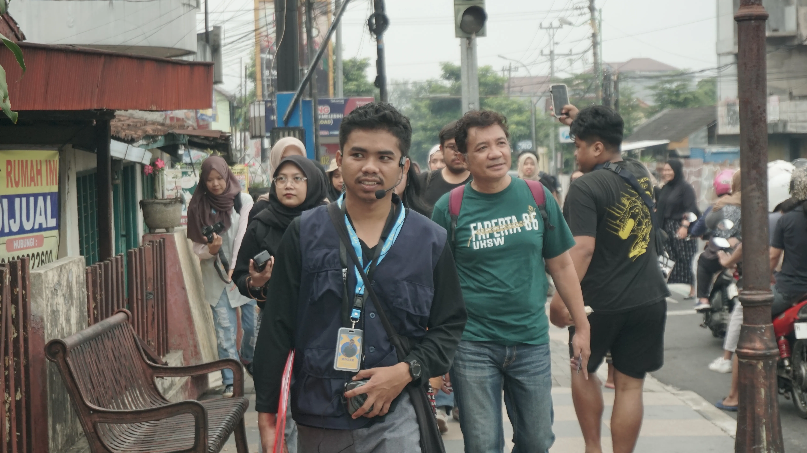
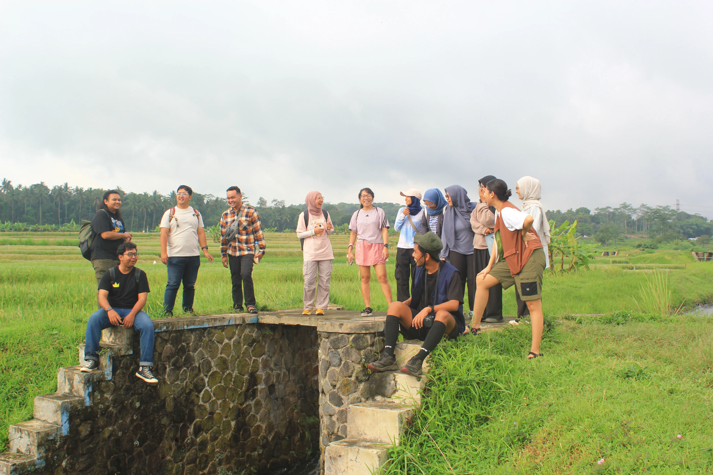
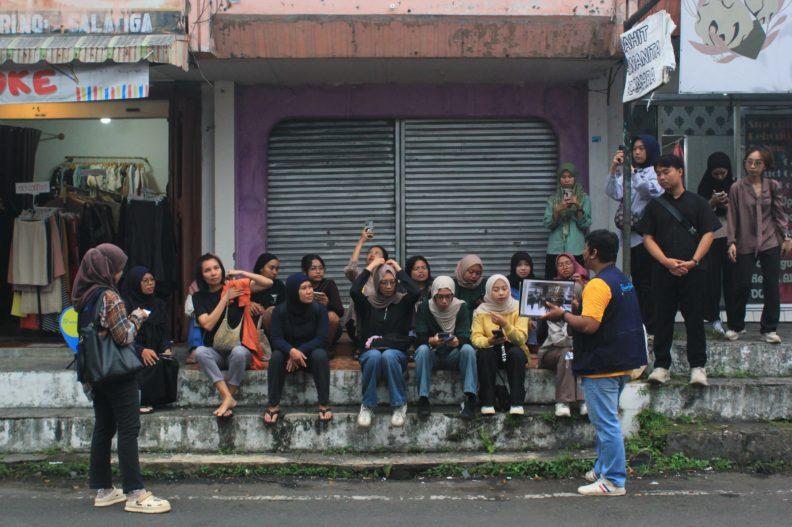
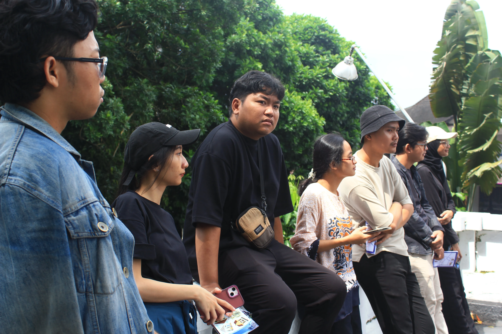
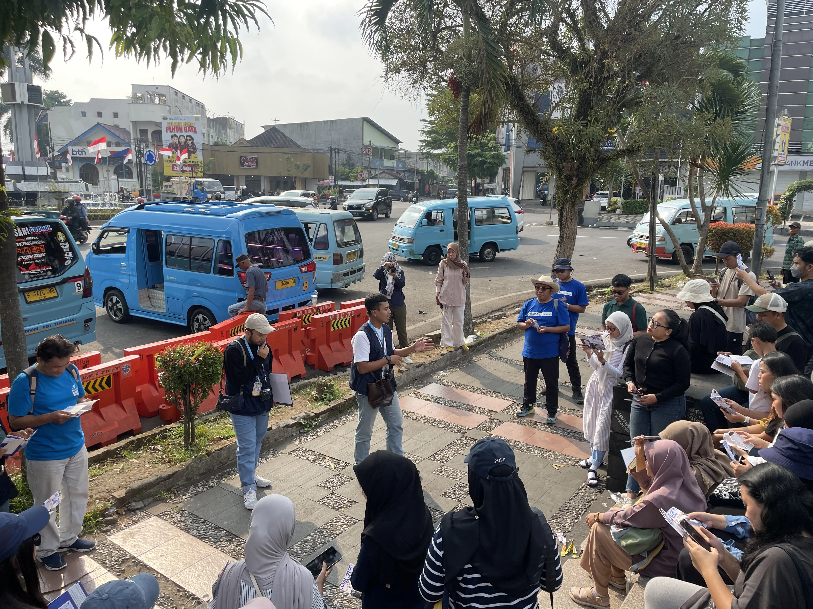
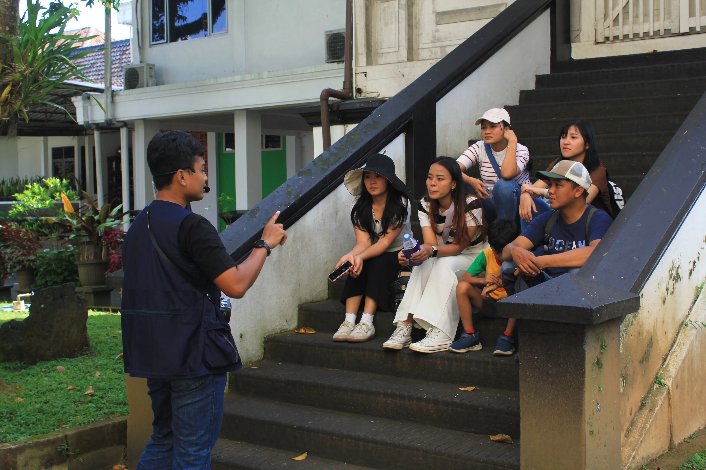
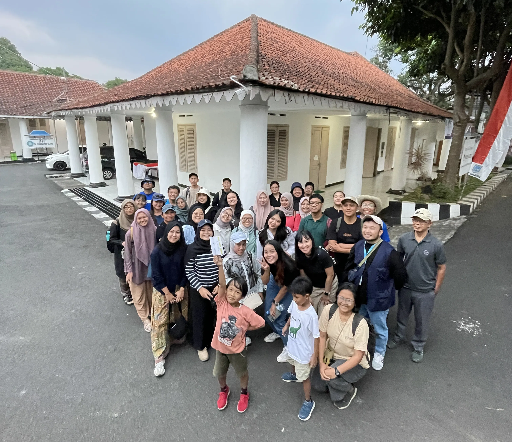
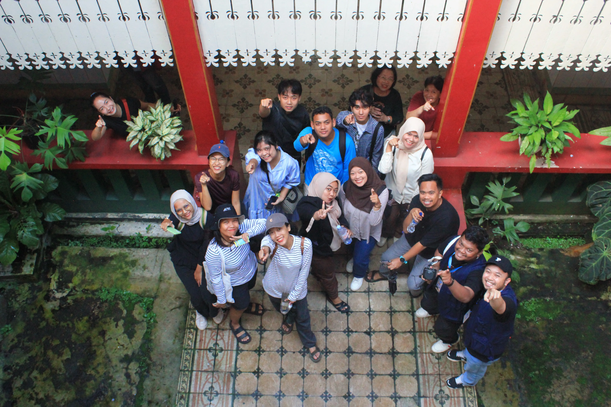
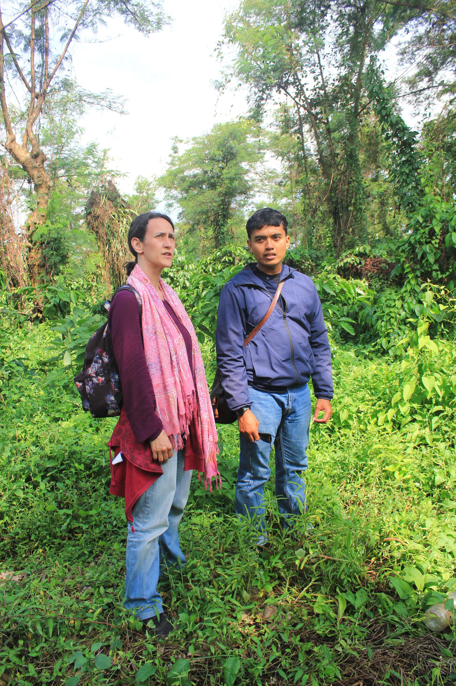
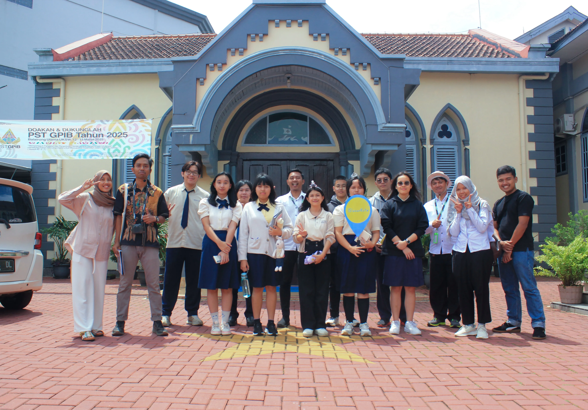

Jelajahi sisi lain Kota lebih mendalam.

Wadah untuk mengenalkan dan memahami sejarah dan budaya melalui pariwisata dalam suatu kota. Hal ini bertujuan untuk memperkaya perspektif kita dalam proses mengukir sejarah baru di masa sekarang dan yang akan datang.

Agenda perjalanan yang diadakan 2 minggu sekali pada minggu pertama & minggu ketiga dalam satu bulan, dengan tema trip yang sudah ditentukan oleh Tim Telusur

Agenda perjalanan yang diadakan setahun sekali pada peristiwa tertentu (e.g. hari pendidikan nasional). Tema perjalanan dari trip ini bisa diakses Teman Telusur tanpa menunggu 1 tahun sekali melalui "Trip Privat"

Agenda perjalanan khusus yang cocok dilakukan bersama teman, keluarga, juga institusi dengan tema dan waktu yang dapat disesuaikan atas kesepakatan bersama

Agenda perjalanan dengan tema yang sudah ditetapkan Tim Telusur khusus untuk pelajar yang sedang berada di bangku sekolah.